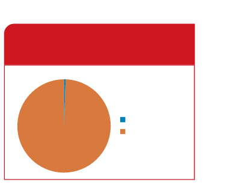

POPULAÇÃO INDÍGENA ANTES DA CHEGADA DOS PORTUGUESES
100%
INDÍGENAS
RILDO CARDOSO
POPULAÇÃO INDÍGENA DE ACORDO COM O CENSO 2022

0,83%
99,17%
INDÍGENAS
NÃO INDÍGENAS
RILDO CARDOSO
FONTE: GOV.BR. BRASIL TEM 1,69 MILHÃO DE INDÍGENAS, APONTA CENSO 2022. SECRETARIA DE COMUNICAÇÃO SOCIAL: IBGE, BRASÍLIA, DF, 2023. DISPONÍVEL EM: https://www.gov.br/secom/pt-br/assuntos/noticias/2023/08/brasil-tem-1-69-milhao-de-indigenas-aponta-censo-2022. ACESSO EM: 3 MAIO 2024.
REPRESENTAÇÃO ESQUEMÁTICA DE DOIS GRÁFICOS DE SETORES. IMAGEM SEM ESCALA; CORES-FANTASIA.
OS SABERES E AS HERANÇAS INDÍGENAS
A LÍNGUA E A LITERATURA DESEMPENHAM PAPEL FUNDAMENTAL NA PRESERVAÇÃO E NO FORTALECIMENTO DAS HERANÇAS DE TODOS OS POVOS, TRANSMITINDO NARRATIVAS E SABERES DE UMA GERAÇÃO A OUTRA.
AO ESCREVER E COMPARTILHAR SUAS EXPERIÊNCIAS, OS ESCRITORES INDÍGENAS CONSTROEM VÍNCULOS ENTRE AS GERAÇÕES, PROPICIANDO UMA COMPREENSÃO MAIS PROFUNDA E RESPEITOSA DE SUA CULTURA.
ASSIM, AS NARRATIVAS, OS DIÁLOGOS E OS CONHECIMENTOS DOS POVOS INDÍGENAS NÃO VISAM APENAS PRESERVAR E FORTALECER CADA VEZ MAIS AS HERANÇAS DOS POVOS ORIGINÁRIOS, MAS TAMBÉM RECONHECER E PROMOVER AS CONTRIBUIÇÕES DESSAS POPULAÇÕES PARA AS CULTURAS BRASILEIRAS.
LEITURA EM FOCO
NO TRECHO A SEGUIR, DANIEL MUNDURUKU E CRISTINO WAPICHANA RESSALTAM A PALAVRA GERALMENTE USADA PARA SE REFERIR ÀS PESSOAS INDÍGENAS.
Para trabalhar o tópico “Os saberes e as heranças indígenas”, inicie contextualizando o tema, explicando a importância dos saberes e das heranças indígenas na formação da identidade cultural brasileira.
Faça uma leitura compartilhada do texto, permitindo aos estudantes lerem parte do texto ou acompanharem a leitura no livro.
Na seção “Leitura em foco”, o trecho introdutório favorece o diálogo sobre preconceitos e o uso de expressões indevidas e infundadas por falta de conhecimentos aprofundados acerca do tema indígena.
Pergunte aos estudantes se eles tinham a informação de que não se deve se referir aos povos originários como índios ou empregando qualquer outro termo preconceituoso, permitindo que todos expressem suas opiniões.
Durante a leitura do trecho, podem-se esclarecer os dados numéricos (1,7 milhão e 0,83%), chamando a atenção para as imagens e esclarecendo o que representa o dado 0,83% da população.
Com base nas respostas registradas, desenvolva um diálogo esclarecedor para que os estudantes se percebam nesse contexto determinista e excludente que vivenciam os povos indígenas.
ATIVIDADE COMPLEMENTAR
1.
Proponha uma conversa sobre o papel da literatura na preservação e no fortalecimento das heranças das populações, transmitindo narrativas e saberes de uma geração para outra.
A literatura indígena também pode ser considerada uma via de expressão e celebração das identidades culturais únicas por meio de contos, mitos, poemas, entre outros.
2.
Proponha a leitura de trechos ou poemas de autores indígenas.
Incentive conversas sobre como a literatura serve como uma ferramenta para preservar e fortalecer as heranças culturais, além de promover uma compreensão mais profunda das culturas indígenas.